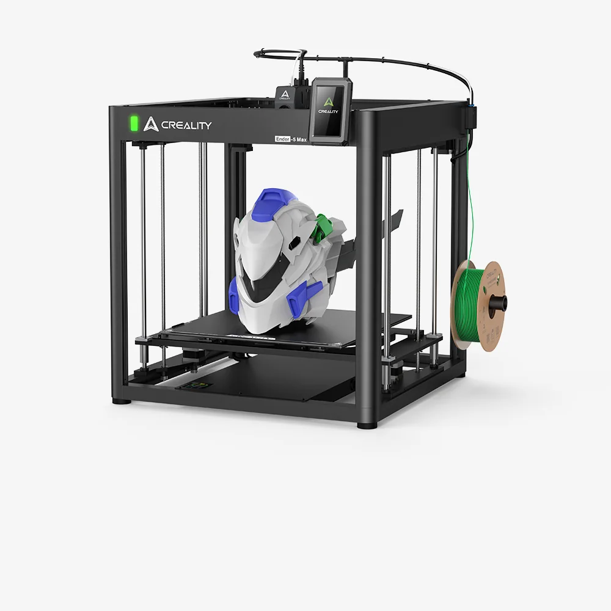

Build volume
400 x 400 x 400 mm
Advertised dimensions; check usable space and variants.
Sources & dates
- Creality Ender-5 Max product page · 2026-08 · vendor
400 mm cube CoreXY bed-dropper with an all-metal frame, X-axis linear rail and 64-point auto levelling.

400 x 400 x 400 mm
Advertised dimensions; check usable space and variants.
Open frame as sold; Creality offers an optional enclosure to raise ambient temperature for engineering filaments
Published enclosure and chamber-heating notes.
$749.00 on store.creality.com, Aug 2026
Dated listing, not a live offer. Read the configuration and region.
Understand the hardware, explore compatible changes and find a diagnostic starting point when something goes wrong. Expand the specification sections for every recorded value, condition and original reference.
Dimensions, construction and the hardware that moves the print.
| Property and unit | Published value and conditions | Sources and dates |
|---|---|---|
| Manufacturer & exact marketed model name (verify the exact product identity first) | Creality Ender-5 Max | 1 source
|
| Street price (USD; dated snapshot per entry) | $749.00 on store.creality.com, Aug 2026 | 1 source
|
| Variants & sibling models — and how to tell them apart (spec-contamination risk) | A cube-frame CoreXY machine where the bed drops in Z - Creality itself calls the class "bed droppers". Do not read Ender-3 V3 figures across: this is a 400 mm cube at 700 mm/s claimed, on a different frame entirely. An optional enclosure is sold for engineering filaments | 1 source
|
The dedicated enclosure adds panels around the Ender-5 Max frame. Use the model-specific installation and retain service access; this accessory does not itself establish a regulated chamber temperature.
Applies to: Ender-5 Max enclosure, not the Ender-5 S1 tent or a generic Ender-3 cover.
| Property and unit | Published value and conditions | Sources and dates |
|---|---|---|
| Build volume X×Y×Z (mm) — advertised vs actually usable | 400 x 400 x 400 mm | 1 source
|
| Enclosure: open / enclosed; panel material; door/lid | Open frame as sold; Creality offers an optional enclosure to raise ambient temperature for engineering filaments | 1 source
|
| Property and unit | Published value and conditions | Sources and dates |
|---|---|---|
| Kinematics (bedslinger i3 / CoreXY / other) | CoreXY on a rigid all-metal frame, with the bed moving in Z (Creality's own term is a "bed dropper") | 1 source
|
| X-axis guide type (rods / linear rails / V-wheels; size) | Precise linear rail on the X axis | 1 source
|
| Z-axis: leadscrew count & type, sync mechanism, anti-backlash | Z axis assisted by two linear rods | 1 source
|
| Stepper motors (frame size, step angle, brand if known) | 42-76 stepper motors on both the X and Y axes | 1 source
|
| Property and unit | Published value and conditions | Sources and dates |
|---|---|---|
| Max print speed (claimed, mm/s) | 700 mm/s max printing speed (Creality Lab claim, with Hyper Series filament recommended for quality at speed); the page also quotes 500 mm/s in the same block, so the two figures need care | 1 source
|
| Max acceleration (claimed, mm/s²) | 20000 mm/s2 max acceleration (Creality Lab claim) | 1 source
|
Extrusion, heating, leveling and material handling.
| Property and unit | Published value and conditions | Sources and dates |
|---|---|---|
| Type (direct drive / bowden) & design name | Direct-drive extruder with dual tempered gears, which Creality says passed 500 hours of continuous-extrusion durability testing | 1 source
|
Check the side-mounted spool and PTFE inlet for tangles, then verify that the extruder switch is closed for feeding. Creality’s decision tree uses manual feeding and gear rotation to distinguish a front-cover jam, dirty gears, a nozzle blockage and a motor fault.
Applies to: Ender-5 Max extruder and side spool path; follow its illustrated heating and disassembly sequence for the identified blockage.
| Property and unit | Published value and conditions | Sources and dates |
|---|---|---|
| Auto bed leveling: probe technology (inductive / strain gauge / load cell / touch probe) | 64-point fully automatic bed levelling | 1 source
|
Firmware, controls, connections and calibration.
SimpleAF supplies editable Kalico configuration for probe changes. Follow its model-specific installation, probe setup and recalibration steps when replacing the stock software environment.
Applies to: Ender-5 Max is explicitly listed by the project. Match the selected probe and hardware revision.
| Property and unit | Published value and conditions | Sources and dates |
|---|---|---|
| WiFi (band/standard), Ethernet, USB ports, SD/flash-drive | WLAN multi-printer management for print farms, with a tri-colour indicator light | 1 source
|
Published safeguards, support terms and independent evidence.
| Property and unit | Published value and conditions | Sources and dates |
|---|---|---|
| Warranty length & support reputation (evidence, not vibes) | Creality's US store states "Up to 12-Month Warranty", a 14-day return and refund window and "Lifetime Customer Support" on its printer product pages. The "up to" wording means the term is not uniform across parts | 1 source |
This guide presents the catalog’s sourced record for this exact model. Source dates belong to each reference; a page update does not mean every specification has been rechecked.
Prices are dated listing snapshots, with configuration, regional and sale conditions. They are not current offers. Unknown values remain unfilled.
Firmware, variants and available accessories can change. Read the original reference before making a purchase or planning a process.
Firmware, modifications and troubleshooting links are checked against the model and stated hardware or firmware revision. A creator’s compatibility claim is not a fit test by this site. Official troubleshooting describes a diagnostic route; individual reports do not establish a failure rate.
This review did not verify printable modifications for this exact model. That is a research gap, not a claim that none exist.